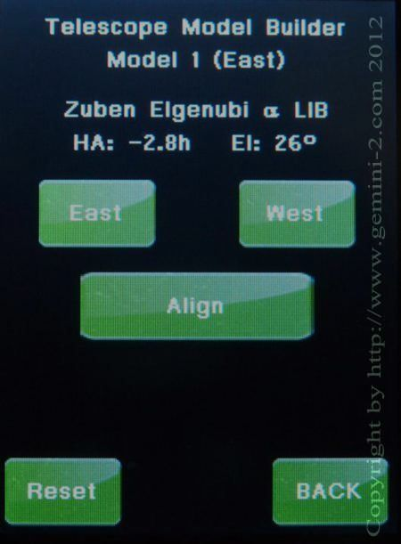

| Interactive Hand-Controller Menus - click on green button to Navigate |
|  | You must hit "ALIGN" if this STAR is acceptable to
add it to the model. If you do not hit "ALIGN" this star will NOT be added to the model. Hitting Align will take you to the screen that show the error reading. The reset is to clear the complete model. Please hit ALIGN for this Demo |